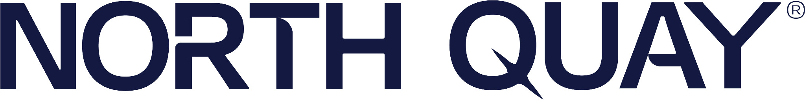

OSINT TV — All‑Source Overview
Non‑interactive wallboard · auto‑refreshed
—
Breach / Leak Intelligence
24h
Live Global Threat Map
If the widget fails, open:
https://cybermap.kaspersky.com/
Security News (RSS)
.